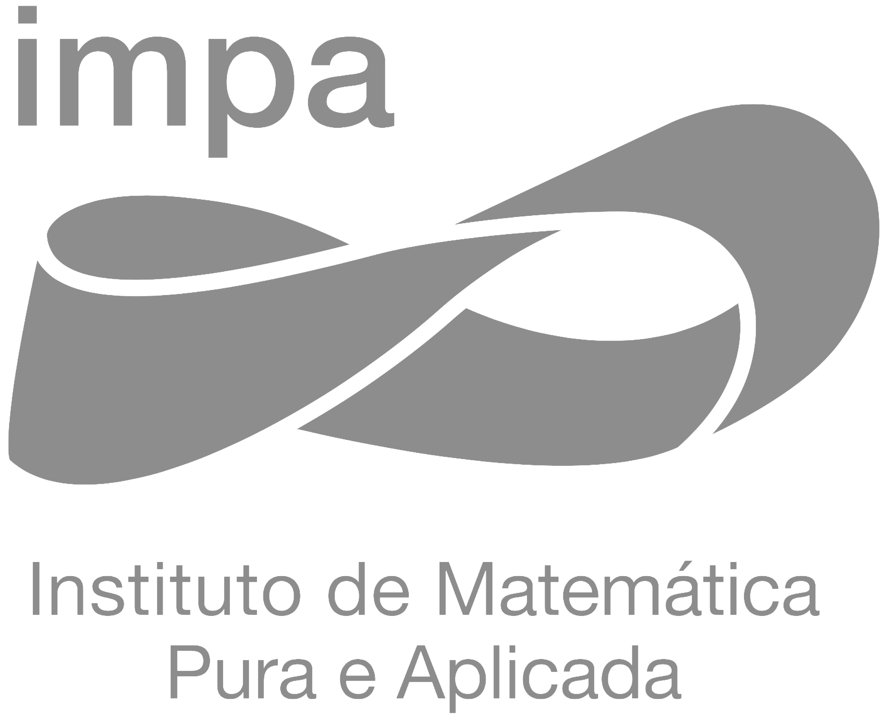

|  |
What’s missing in multimodal AI? Towards spatial awareness, effective tool use and fine-grained understanding
Andre Araujo
(Google DeepMind)
The recent progress in multimodal AI systems has enabled a variety of applications, such as natural chatbot interactions, smooth information-seeking journeys and promising robotics deployments. Despite the significant advancements in the past few years, these systems still face challenges in a number of areas. In this talk, I will highlight recent work from my team and collaborators to enhance three important aspects: spatial awareness, effective tool use and fine-grained understanding. Taken together, these ideas offer directions for designing ever-more-capable multimodal systems and experiences.
Enhancing realistic rendering for mixed and virtual reality games
Esteban Clua
(UFF)
The video game industry continuously advances real-time rendering techniques, with an increasing focus on features like ray-tracing and global illumination. Additionally, VR/MR/AR games are pushing for high-quality rendering despite constraints such as high-definition displays (requiring many pixels), less powerful processors, and higher frequency requirements. This talk will present key optimization strategies, including hybrid denoising, foveated culling methods, optimization for foveated displays, and the usage of neural rendering approaches.
Computação visual aplicada à análise de comportamento humano
João Paulo Lima
(UFRPe)
A Computação Visual para Análise de Comportamento Humano (Human Analytics) combina visão computacional e inteligência artificial para analisar o comportamento humano a partir de imagens e vídeos. Aplicada em áreas como saúde, segurança e marketing, ela permite o monitoramento e interpretação de gestos, expressões faciais e movimentos corporais em tempo real. Usando técnicas como aprendizado profundo e reconhecimento de padrões, essa tecnologia é capaz de detectar emoções, prever comportamentos e otimizar processos, como a interação humano-máquina. Assim, a Computação Visual tem transformado a análise de dados comportamentais, criando novas oportunidades para inovação e automação. A palestra discutirá sobre as últimas tendências na área de Computação Visual para Human Analytics, apresentando o estado da arte e as futuras direções de pesquisa da área.
Uma introdução a gaussian splatting
Daniel Perazzo
(IMPA)
O problema de reconstrução 3D é considerado um dos principais desafios nas áreas de computação gráfica e visão computacional. Nesta palestra, faremos uma breve introdução a Gaussian Splatting, uma das técnicas mais promissoras para esse problema, com resultados impressionantes tanto em velocidade quanto em qualidade de reconstrução. Explicaremos as bases matemáticas do método e discutiremos algumas de suas aplicações.
Representation and rendering of intrinsic triangulations
Waldemar Celes
(PUC-Rio)
Existing intrinsic triangulation frameworks represent powerful tools for geometry processing; however, they all require the extraction of the common subdivision between extrinsic and intrinsic triangulations for visualization and optimized data transfer. In this talk, an efficient and effective algorithm for directly rendering intrinsic triangulations is presented. The strategy is to use GPU shaders to render the intrinsic triangulation while rasterizing extrinsic triangles. The algorithm relies on a point-location algorithm supported by a compact data structure, which requires only two values per extrinsic triangle to represent the correspondence between extrinsic and intrinsic triangulations. This data structure is easier to maintain than previous proposals while supporting all the standard topological operations for improving the intrinsic mesh quality, such as edge flips, triangle refinements, and vertex displacements. Computational experiments show that the proposed data structure is numerically robust and can process nearly degenerate triangulations. A meshless strategy to accurately transfer data from intrinsic to extrinsic triangulations will also be presented.
The generalized singular value decomposition
João Paixão
(UFRJ)
The Generalized Singular Value Decomposition (GSVD) is a matrix factorization technique that extends the classical Singular Value Decomposition (SVD) to pairs of matrices, providing a simultaneous decomposition that reveals their shared and individual structures. By decomposing two matrices A and B into generalized singular vectors and values, GSVD enables robust analysis of coupled data structures, making it a valuable tool in computational mathematics and applied sciences. In computer vision, GSVD is used for feature extraction, subspace learning, and multi-view dimensionality reduction. In this talk, we will present the theory behind the GSVD and its applications.
Geração automática de arte de tampinhas de garrafa
Leonardo Sacht
(UFSC)
Propomos um novo problema em processamento de imagens: aproximar uma imagem dada com um conjunto de tampinhas de garrafa de plástico. Este problema é motivado pela apreciação causada por imagens de baixa resolução combinada com o objetivo de achar um novo destino para tampinhas de plástico, cujo descarte inapropriado causa dano ambiental especialmente a animais do mar. Apresentamos dois métodos: um modela o problema como maximização de uma função objetivo que quantifica quão similares são uma imagem comum a uma imagem de tampinhas de garrafa e o outro, mais rápido, divide a imagem em regiões e determina a melhor cor de tampinhas para cada região. Exemplos demonstram que nossos métodos produzem resultados de alta qualidade mesmo neste contexto de resoluções espacial e de cor muito baixas.
Animação digital de avalanches de neve
Afonso Paiva
(ICMC-USP)
Este trabalho apresenta um método baseado em física usando o Método de Volume Finito para simular avalanches de neve em pó sobre terrenos complexos. Especificamente, o objetivo principal é simular a dinâmica turbulenta da nuvem de neve dentro da avalanche de uma maneira visualmente realista. Trabalho em colaboração com Filipe Nascimento (Adobe) e Fabricio S. Sousa (ICMC-USP).
Primeiras experiências em computação gráfica
Gabriel Ferreira
(IMPA Tech)
A palestra abordará experiências dos alunos graduandos do IMPA Tech no curso de verão "Reproduzindo Resultados em Computação Gráfica", discutindo os contatos e as formas de encarar problemas que existem na computação gráfica enquanto adaptam algoritmos de papers clássicos. Este trabalho visa além de explicar o funcionamento desses algoritmos, mostrar um pouco do processo de tomadas de decisões para a adaptação dos artigos nas linguagens de programação dos dias atuais. Diante disso, técnicas básicas como leitura de imagens e aplicações de efeitos monocromáticos foram incorporadas a algoritmos clássicos de meio tom digital. Além disso, serão mostrados teoremas matemáticos como curvas de recobrimento de espaço.